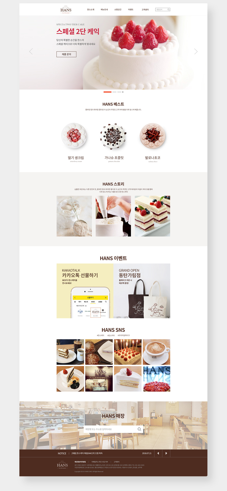
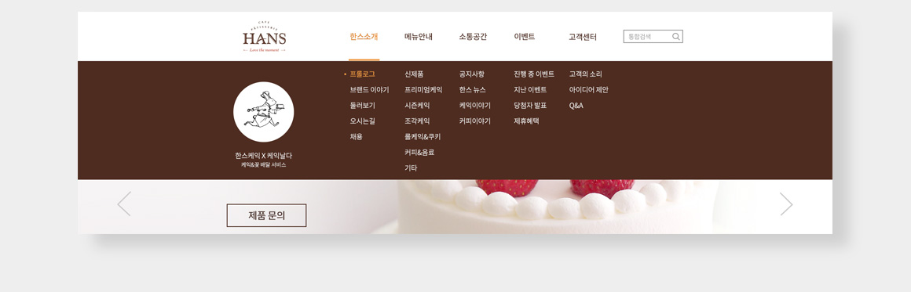
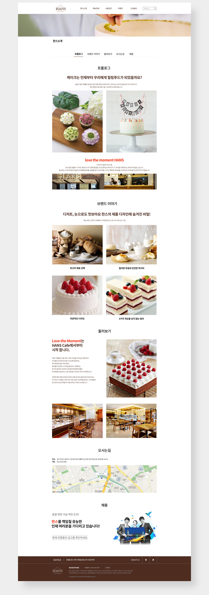
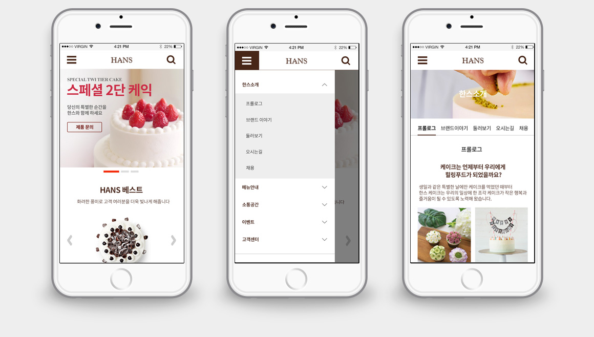

(주)한스제과 반응형 웹사이트 리뉴얼
한스제과는 케이크와 커피를 주 메뉴로 판매하고 있는 고급 제과점입니다. 현재 웹사이트는 짙은 브라운을 메인 컬러로 비주얼 영역의 케익 이미지가 다소 어둡고 메인 페이지에 컨텐츠가 부족한점 등을 새롭게 디자인하여 전체적인 레이아웃 을 변경하고 이미지를 밝고 신선해 보이는 케익 이미지로 교체하였습니다.
반응형 웹사이트
(주)한스제과
2018.08
기획/디자인/코딩 100%
CONCEPT
As is
올드한, 밋밋한, 어두운, 재미없는, 칙칙한, 촌스러운
To be
고급스러운, 신선한, 달콤한, 분위기있는, 세련된, 친근한
유지보수가 어려운 구조의 비주얼 영역 변경
비주얼 영역의 이미지가 움직이며 썸네일 글씨가 변경되는 구조는 추후에 이미지 를 추가하기 어려운 구조이므로 제거하였고 심플한 슬라이드버튼을 사용하여 세련된 느낌을 주었다.
어두운 이미지를 제거하고 톤을 밝게 조정
프리미엄 케이크를 표방하여 짙은 갈색을 메인컬러로 고급스러운 분위기를 내고 있지만 케이크의 산뜻하고 달콤한 느낌이 부족하므로 비주얼 영역의 어두운 이미지를 전면 교체하였다.
브랜드스토리, 이벤트, SNS등의 컨텐츠 메인에 배치
이벤트, 공지사항, SNS활동등 고객들이 궁금해 할 만한 컨텐츠를 메인에 간략히 배치하여 고객들이 카테고리를 통해 찾아 들어가지 않더라고 최근의 한스 소식을 쉽게 접할수 있게 하였다.
FONT GUID
NOTO SANS KR BOLD 40px
NOTO SANS KR Regular 18px
Times New Roman Italic 18px
COLOR GUID
#4e2c20#ef9943#eeeeee
KEYWORD
#상큼한#달콤한#행복#여유로운#부드러운#설레임#분위기있는#청결한#신선한#사랑#특별한#생일
GRID SYSTEM
columns : 12colsGutter Width : 40pxMax width : 1200pxColumn width : 56px

MAIN PAGE
NAVIGATION MENU
SUB PAGE
MOBILE
